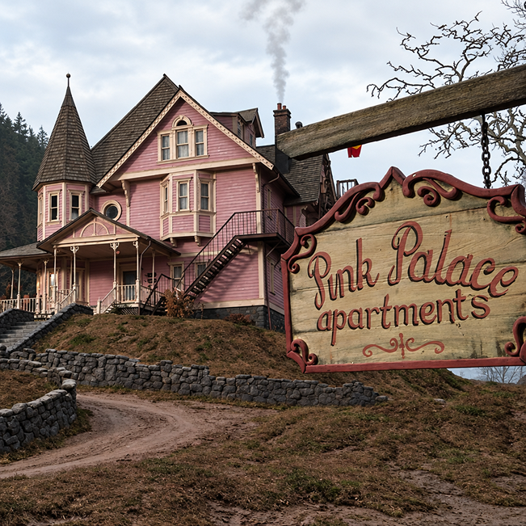

КОРАЛИНА В СТРАНЕ КОШМАРОВ

Страница 1. Дом, которого не должно быть
Всё началось с переезда…
Вдали от привычного мира Коралина находит новый дом - старый, странный и полный загадок.
Кажется, за его стенами скрывается нечто большее, чем просто пыльные комнаты и скучные дни.